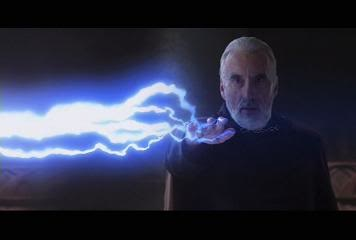

Hey everybody! Welcome to my Star Wars page! I'm so so so excited about the new Star Wars movie that's coming out. I really hope that Disney doesn't butcher it. I heard a rumor from a bro who heard it from a guy who heard it from his brother's best bud who said that the next movie will have Obi-Wan in it! I mean, how cool is that!
Of course, as we all know, the best character is Yoda. Here's one of my favorite pix of the little green guy. As everyone knows, Yoda is eternally young and will live forever. Therefore, he has to be in the new movie. So, here's the scoop. I read online the other day that this movie will, in addition to the total bros mentioned already, feature Luke's kids.
Now, I know what all of you are thinking - didn't we hear about Luke's lightsaber-wielding munchkins already? Something about a series of books or two where they grew up, had their own kids, took over the galaxy, stuff like that? Well, I guess we were wrong. It looks like the Remasterer Lucas himself has his own plans, no matter what the tales told by Tim Zahn have to say.
Oh, well, enough about the new movie for now. There's a comic I've been reading, which, although blasphemous to the canon of SW, is mildly amusing. It treats the movies like a role-playing game, giving new dialog for the original films. It's pretty good for a laugh or two. One of my SW buddies turned me on to the site. Called something like Siths and Sabres, or something. Check it out sometime. Parts of it are reminiscent of an old detective movie, with the dialog and such. It even features Dooku as a French guy!

Anyway, until I get a chance to post next, may the Force Be With You!
~~d34thstar1977